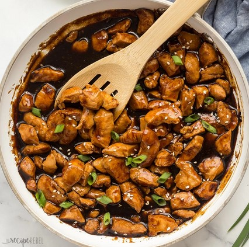

Chicken Katsu

Crispy in Every Bite
chicken katsu is a deep fried chicken covered in a breadcrumbs
- Chicken
- Breadcrumbs
- Flour
- Eggs
follow the instruction below to cook the chicken katsu
- Butterfly your chicken
- Cover it with flour
- Dip it in your beaten eggs
- Cover it with breadcrumbs
- Deep fried the chicken until golden brown
and that's it! you can serve it with hot rice and cabbage